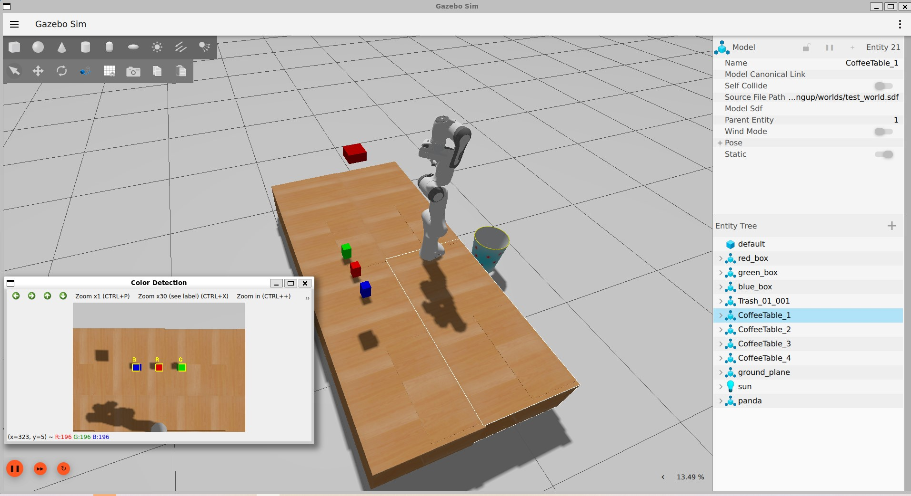

Vision-Guided Pick-and-Place Simulation
A perception-to-motion pipeline for a 7-DOF manipulator. A camera finds the object, ROS2 passes the pose along, and MoveIt2 plans the grasp and placement, tested in Gazebo simulation.
View on GitHub ↗